小智雅汇2020-12-24 10:01:26
对于企业管理来说，利润、成本始终是一个大问题。零库存始终是企业追求的目标，但因为企业之间的协作、企业内部的管理总有不够完善之处，零库存始终只是目标而已，这样，就涉及到一个库存的控制方式的问题。
1 库存控制系统
库存控制系统的结构由输出、输入、约束和运行机制四部分组成，与生产系统不同，在库存控制系统中没有资源形态的转化。
输入是为了保证系统的输出（对用户的供给）。
约束条件包括库存资金的约束、空间约束等。
运行机制包括控制哪些参数以及如何控制。在一般情况下，在输出端，独立需求不可控；在输入端，库存系统向外发出订货的提前期也不可控，它们都是随机变量。可以控制的一般是何时发出订货（订货点）和一次订多少（订货量）两个参数。库存控制系统正是通过控制订货点和订货量来满足外界需求并使总库存费用最低。
库存控制系统都必须解决三个问题：
确定订货点，即解决什么时候订货的问题或者确定检查周期，解决隔多长时间检查一次库存量的问题？
确定订货批量，即解决一次订货多少合适的问题。
确定订货如何具体实施，以及库存系统的安全库存的问题。
按照对以上三个问题的解决方式的不同，可以有多种可供选择库存控制方式。
包括定量、定期控制方式，以及最大最小库存控制方式、MRP、JIT等。
下面用一张表格来总览一下定量、定期控制方式：
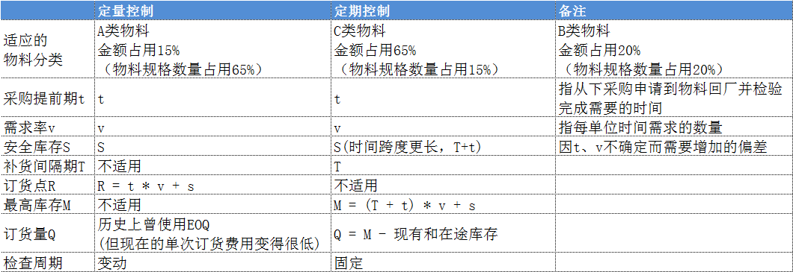
以下就上述表格的逐项说明。
2 定量控制方式
又称连续订货法、固定量系统，属于连续检查、独立处理。
订货点和订货量都是固定的数量。当库存控制系统的现有库存量降到订货点（RL，Reorder Level）及以下时，库存控制系统就向供应厂家发出订货，每次订货量均为一个固定的量Q。经过一段时间，我们称之为提前期（LT，Lead Time），所发出的订货到达，库存量增加Q。订货提前期是从发出订货至到货的时间间隔，其中包括订货准备时间、发出订单、供方接受订货、供方生产、产品发运、提货、验收和入库等过程。显然，提前期一般为随机变量。
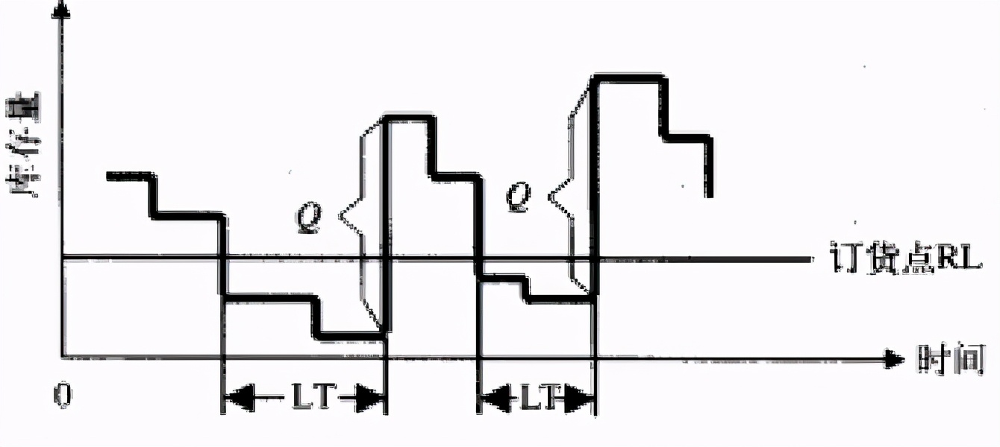
要发现现有库存量是否到达订货点RL，必须随时检查库存量。固定量系统需要随时检查库存量，并随时发出订货。这样，增加了管理工作量，但它使得库存量得到严密的控制。因此，固定量系统适用于重要物资的库存控制。
为了减少管理工作量，可采用双仓系统。所谓双仓系统是将同一种物资分放两仓（或两个容器），其中一仓使用完之后，库存控制系统就发出订货。在发出订货后，就开始使用另一仓的物资，直到到货，再将物资按两仓存放。
定量控制方式的优势：
1 保持库存连续记录，成本较高；
2 运输成本和采购成本较高；
3 不能够获得数量折扣，不能够进行联合采购；
4 适合A类物料和缺货成本较高的物料；
5 订货数量为EOQ；
EOQ=SQRT(2KD/C)（K：每次订购成本，fixed cost per order ；D：每年需求数量；C：每单位存货持有成本；），在信息技术飞速发展的今天，每次订购成本K会变得越来越小，导致EOP会更小，所以其应用大打折扣，关于EOQ，后面会有较详细论述
3 定期控制方式
又称固定间隔期系统，属于不连续检查、相关处理。
固定量系统需要随时监视库存变化，对于物资种类很多且订货费用较高的情况，是很不经济的。固定间隔期系统可以弥补固定量系统的不足。定期库存控制系统就是每经过一个相同的时间间隔，发出一次订货，订货量为将现有库存补充到一个最高水平S。
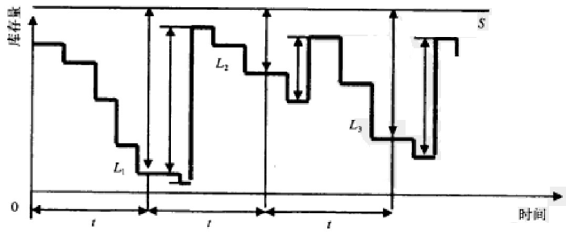
当经过固定间隔时间t之后，发出订货，这时库存量降到L1，订货量为S－L1；经过一段时间（LT）到货，库存量增加S－L1；再经过固定间隔期t之后，又发出订货，这时库存量降到L2，订货量为S－L2，经过一段时间（LT）到货，库存量增加S－L2。
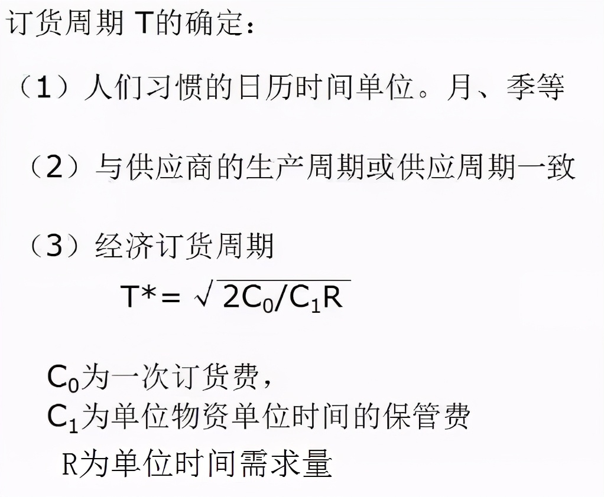
固定间隔期系统不需要随时检查库存量，到了固定的间隔期，各种不同的物资可以同时订货。这样。简化了管理，也节省了订货费。不同物资的最高水平S可以不同。固定间隔期系统的缺点是不论库存水平L降得多还是少，都要按期发出订货，当L很高时，订货量是很少的。为了克服这个缺点，就出现了最大最小系统。
定期控制方式的优势：
1 可获得数量折扣，可实现联合采购；
2 保险库存需要考虑检查周期与前置时间中需求数量的波动；
3 订货数量＝最高库存 - 库存余额（包括在途库存）；
4 最大最小系统
又叫非强制补充进货，定期检查，将库存余额与最低库存比较决定是否申购？
最大最小库存控制方式是针对定期控制方式的缺陷的改进，对于定期订货方式而言，当到期后对某一些物料采购时，发现需要采购的数量可能很少，为此，可以对全部物料再设置一个订货点s（或最低库存），只有当库存数量低于这个订货点时，才发出采购订单，如下图的第二个时间周期就可以考虑不发出采购订单。
最大最小库存控制系统仍然是一种固定间隔期系统，只不过它需要确定一个订货点s。当经过时间间隔t时，如果库存量降到s及以下，则发出订货；否则，再经过时间t时再考虑是否发出订货。
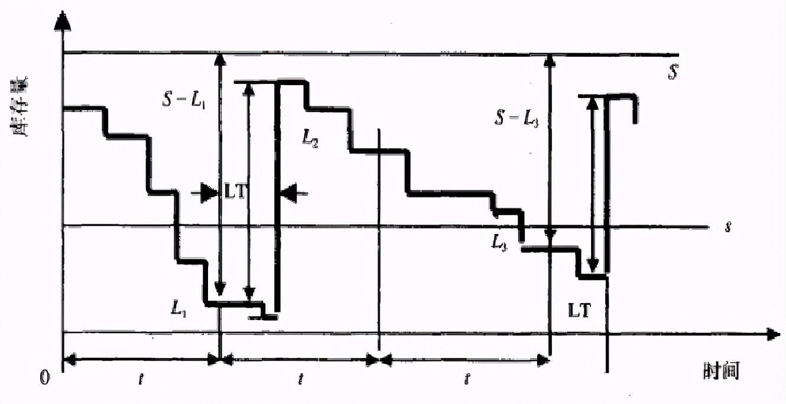
当经过间隔时间t之后，库存量降到L1，L1小于s，发出订货，订货量为S－L1，经过一段时间LT到货，库存量增加S－L1。再经过时间t之后，库存量降到L2，L2大于s，不发出订货。再经过时间t，库存量降到L3，L3小于s，发出订货，订货量为S-L3，经过一段时间LT到货，库存量增加S-L3，如此循环。
以上三种控制方式以外的一些其它方式：
MRP：Material Requirement Planning，按订单需求进行分析与计划；
JIT：Just In Time，快速准时实现零库存；
VMI，Vendor Managed Inventory，信息共享、环节同步；让供应商建立库存；
JMI，Joint Managed Inventory，与供应商、客户一起联合管理库存:
5 库存物料的ABC分类
面对纷繁杂乱的处理对象，如果分不清主次，鸡毛蒜皮一把抓，可想而知，其效率和效益是不可能高起来的。而分清主次，抓住主要的对象，却一定可以事半功倍。
意大利经济学家帕累托( Pareto)在分析意大利社会财富分布状况时得到的“关键的少数和次要的多数”的结论。后来由约瑟夫·朱兰（Joseph M. Juran）根据上述结论总结出来80/20法则（The 80/20 Rule）又称为帕累托法则(Pareto Principle）、二八定律、帕累托定律、最省力法则、不平衡原则、犹太法则、马特莱法则等。
80/20的法则认为：原因和结果、投入和产出、努力和报酬之间本来存在着无法解释的不平衡。一般来说，投入和努力可以分为两种不同的类型：
多数，它们只能造成少许的影响；
少数，它们造成主要的、重大的影响。
二八定律应用到库存管理中，就是ABC分类法(Activity Based Classification) ，全称应为ABC分类库存控制法。对于企业使用的全部物料规格，通常占用金额65%的只占全部规格数量的15%，其基本的分类思路如下：
1 从表格上列出物料规格名称、年使用数量、单价，计算每一种物料料的金额。
2 按照金额由大到小排序排列。
3 计算每一种物料金额占库存总金额的比率。
4 计算金额占用累计比率。
5 分类。金额占用累计比率在0%～65%之间的，为最重要的A类材料；累计比率在65%～85%之间的，为次重要的B类材料；累计比率在85%～100%之间的，为不重要的C类材料。
ABC分类法还可以应用到质量管理、成本管理和营销管理等管理的各个方面。
6 安全库存（SS，Safety Stock）
安全库存（safety stock）是指当不确定因素（订货期间需求增长、到货延期等），也就是上述表格中的需求率 v 和采购提前期 t 的偏差导致的需求波动和到货不确定而需要的缓冲库存。这种偏差需要以数理统计理论进行分析。
安全库存越大，出现缺货的可能性越小；但库存越大，会导致剩余库存的出现。应根据不同物品的用途以及客户的要求，将缺货保持在适当的水平上，允许一定程度的缺货现象存在。安全库存的量化计算可根据顾客需求量固定、需求量变化、提前期固定、提前期发生变化等情况，利用正态分布图、标准差、期望服务水平等来求得。
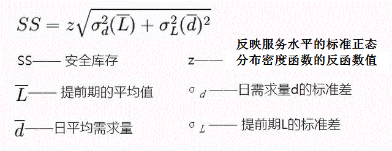
标准差是每一个数据相对于平均值偏移程度的一种描述，可用以下公式求得。
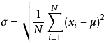
公式中数值x1,x2,x3,…Xn(皆为实数)，其平均值(算术平均值)为μ，标准差为σ。
z是反映客户服务水平的标准正态累积分布函数的反函数的值。例如要达到95%的服务水平，也就是只有5%的缺货率，这个95%可以用标准正态累积分布函数来描述，其反函数的值就是z，在Excel中可以使用normsinv(probability%)来计算，如normsinv(95%)=1.65，客户服务水平越高，z值越大，相应的安全库存也就越大。
标准正态分布表与常用值：

1 Z-score 是非标准正态分布标准化后的 x即 z = (x − μ) / σ
2 表头的横向表示小数点后第二位，表头的纵向则为整数部分以及小数点后第一位；两者联合作为完整的 x。
3 表中的值为图中红色区域的面积，也即 cdf （概率密度函数，Probability Density Function），连续分布的累积概率函数，记为 Φ ( x )。
4 cdf 的逆，记为
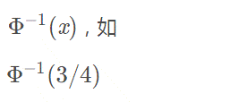
表示 x 取何值时，阴影部分的面积为 0.75，查表可知，x 介于 0.67 和 0.68 之间。
上面SS公式是经典的安全库存公式，看起来简单，可是在企业实践中的应用，却颇为复杂，原因是数据收集量难度很大，例如对于具有几千至几万种物料的制造业企业或大中型零售企业而言，收集关于物料或产品的日需求量d和提前期L的数据，其难度之大可以预期。而且，理论或方法越复杂，其在企业实践中的广泛应用越受到限制。
签于此，在需求随机分布并服从正态分布的假设下，通常假设提前期不变，则σL为0，则上面SS公式的后一截就可略去：
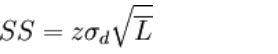
6.1 定期补货策略下安全库存量的确定
随着库存的减少，企业要采取措施来补充库存。其中一种补充库存的办法是规定补货时间。一般是确定两次补货之间的时间间隔，只要第一次补货时间明确，以后各次补货时间也就确定下来了，这种补货方式称为定期补货策略。
在定期补货策略下，补货时间是确定的，每次补货的数量就成为主要应解决的问题。假设每次补货的数量为Q，补货时间间隔为T，补货提前期为t (补货提前期指从发出补货指令到货物入库所需时间) ，每次补货时库存量为q，需求率为v (单位时间内的需求) 。每到补货时间，企业就要发出Q量的补货指令， 经过t时间， Q量的补货入库，要等到下次补货入库还要经过时间T。不难看出，在t + T时间内，用于满足需求的库存总量为Q + q，这个总量定为E ( E =Q + q) ，称之为最大库存量。因为在每次补货时都可以通过盘库获得q量，所以要明确补货量Q，只要知道E，就可以通过E - q来确定。在定期补货策略下的补货问题似乎就变为如何确定E的问题， E的问题一旦明确，定期补货策略就可以在企业的控制之下实现库存的管理问题。在E 的确定中就涉及安全库存量。
E是用来满足( T + t)时间内的需求量，如果需求率v是确定的，即单位时间内的需求不变，则E =v ×( T + t) ，其全部为经常性库存，不包括安全库存，如果v是不确定的，则E的确定需要从经常性库存和安全库存两方面准备。经常性库存通常最简易的做法是用平均需求率E ( v) ×( T + t)取得， 而安全库存则要根据需求分布特征和企业愿意提供的需求满足率（客户服务水平）来确定。
6.2 定量补货策略下安全库存量的确定
定量补货策略下，每次补货的数量都相同，而补货的时间则是根据盘点库存量来确定的。当盘点库存量降到企业所规定的一个限量———订货点时，就发出确定的补货量。这种补货策略中，从一次补货入库到下次补货指令发出之间一般不会出现缺货。因为，企业时刻在监测库存量的变化，直到订货点出现时发出新的补货，这期间库存量一直维持在订货点之上。但是从订货点发出新的补货指令到补货入库期间，如果需求率是不确定的，则有可能出现缺货，这时候就要考虑准备安全库存量。
援引前段提到的假设，即在时间t段要准备安全库存量，由于t时间段只有订货点来满足需求，所以在确定订货点时要包括安全库存量，即订货点由经常性库存和安全库存两部分组成。安全库存量的确定，依据仍然取决于需求特性与需求满足率。
定量补货策略相对于定期补货策略，因为后者需要考虑的周期是(T+t)，而后者只需考虑 t ，所以，需要的安全库存要低些。
6.3 例1
某饭店啤酒补货提前期为5天，提前期内需求量服从期望为20加仑，标准差为2加仑的正态分布，在定量补货策略下如果维持95%的需求满足率，需要多少安全库存量？
可以看出，提前期内需求是不确定的，但是有规律可循。在确定订货点时，除了考虑期望值为20加仑外，还要考虑安全库存， 以满足超出期望值的需求，使需求满足率达到95%，所以订货点= 20加仑+安全库存。查标准正态分布表得95%的累计概率下的偏差为1. 65个标准方差(Excel使用NORMSINV(95%)可求得)。
SS = 1.65*2*sqrt(5) = 8
也就是说，实际需求在0～28加仑之间出现的可能性为95%，要实现需求满足为95%，必须确定订货点为28。
6.4 例2
一个产品的需求历史如下图所示，假定采用定量控制方式，一旦在途和在库库存之和低于再订货点，就触动订货机制。再假定供应商的补货周期为4个星期，如果要达到95%的有货率，再订货点要设多高？其中安全库存是多少？补货周期内的平均需求呢？
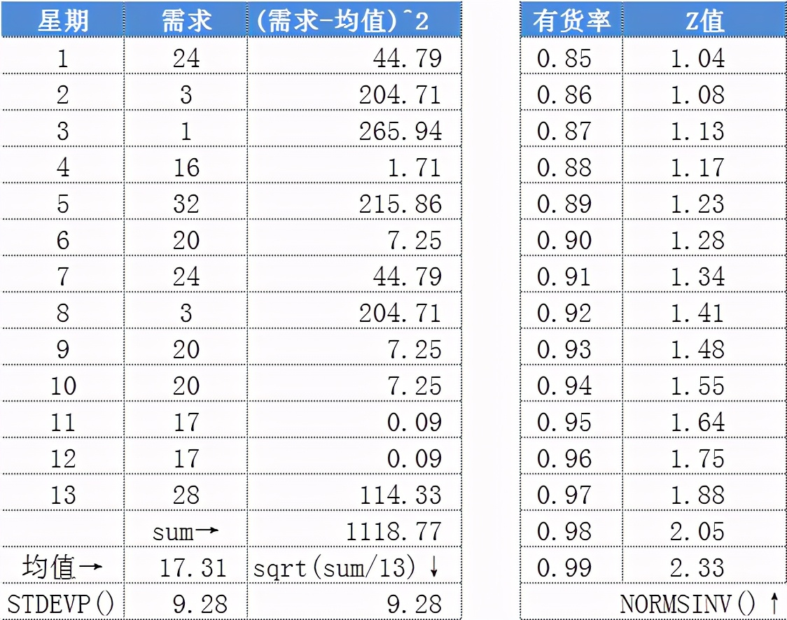
我们这里是用13周的需求历史，需求相对平稳，没有明显的趋势、季节性等，而且符合正态分布（这点从数理统计的角度，比如卡方检验可以验证）。那么，我们围绕这13个数据点，就可以求出每周平均需求为17个，每周需求的标准差为10个（取整）。在上图的右边，展示了有货率与有货率系数Z值的关系。有货率和Z值是一对一的关系，可以通过查表或者Excel表格中的函数Normsinv( )，计算出每个有货率对应的Z值。
再订货点等于补货周期（4周）内的平均需求（4*17=68个），加上安全库存。安全库存等于Z值*补货周期内的需求标准差。95%的有货率对应的Z值为1.64。每周需求的标准差已经知道（10个），那补货周期4周内的需求标准差也可以算出：√4*10=20。安全库存就等于1.64*20=32.8，加上补货周期内的平均需求68个，就得到再订货点100.8。当然，你不能订0.8个货，那就四舍五入为101个。
补货周期内的平均需求：17*4 = 68
95%有货率对应的Z值：1.64
安全库存： 1.64*√4*10 = 1.64*2*10 = 32.8
再订货点： 68+32.8 = 101
以上讨论所提及的需求满足率，通常指的是库存管理的服务水平。如何获得一个客观有效的服务水平作为企业确定安全库存量的参数至关重要。服务水平可以直接通过客户调查获得，也可以通过历史数据和企业改善管理的能力确定，确定的方法一般有两个：
库存服务水平= (一定时期内满足的订单数/一定时期内订单总数) ×100%
库存服务水平= (一定时期内满足的物料单位数/一定时期内物料需求总数) ×100%
对于同一资料，采用不同计算方法，确定的服务水平有所不同。确定哪一个计算结果作为企业服务水平的衡量水平，企业既要坚持计算方法的连贯性，又要考虑同行业的可比性。因为，服务水平既是企业管理水平的衡量指标，也是企业确立竞争力的因素之一。
7 经济订货批量EOQ的确定
所谓订货批量就是每一次订货的数量。订货批量的高低，不仅直接影响库存量和库存成本的高 低，而且直接影响货物供应的满足程度。订货批量大小的主要影响因素有两个：
需求速度，需求速率越高，订货批量就越大。
经营费用，费用的高低，对订货批量有影响，经营费用低，订货批量可能就大，反之，订货量就小。
7.1 经济订货批量的原理
经济订购批量（Economic Order Quantity, 简称EOQ）的原理是平衡订货成本、存储成 本，寻求使得包含采购成本、订货成本、持有成本在内的总库存成本最小的订货批量。
7.2 经济订货批量模型的假设
经济订货批量模型最早由F.W.Harris于1915年提出的，该模型有如下假设:
(1) 需求率已知，为常量。年需求量以D表示，单位时间需求率以d表示。
(2) 一次订货量无最大最小限制。
(3) 采购，运输均无价格折扣。
(4) 订货提前期已知，为常量。
(5) 订货费与订货批量无关。
(6) 维持库存费是库存量的线性函数。
(7) 补充率为无限大，全部订货一次交付。
(8) 不允许缺货。
(9) 采用固定量系统。
由于该模型假设了产品的需求速率和订货提前期是固定的，而且所订产品瞬时到货，因此，不需要安全库存。
7.3 经济订货批量的原理
基于以上假设，在简单EOQ模型中，我们只考虑购买成本、存货持有成本和订货成本。
随库存量增加而增加的费用：资金成本、仓储空间和管理费用、税收和保险、物质陈旧和变质等。
随库存量增加而减少的费用：购买费和加工费（折扣）、订货费、缺货费等。
① 每单位年持有成本
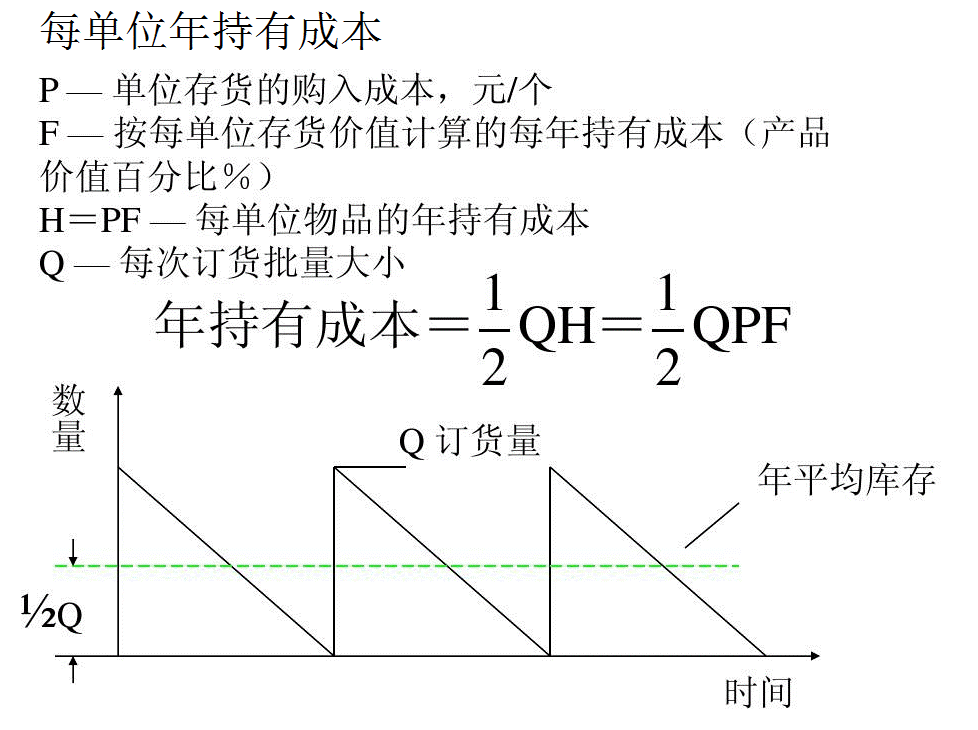
单位年持有成本，annual holding cost per unit，也称为储存成本，包括资本成本、仓库空间、制冷、保险等，通常与单位生产成本无关。
② 年订货成本

可以用采购部门的总管理费用和质检、仓储部分的部分费用去匹配年订货成本。可以根据订单金额大小等因素使用一种加权方法来计算某项订货单的费用。
③ 总成本
其中采购成本为R*P，其中R是年需求量、P为单价。

④ 年总成本曲线
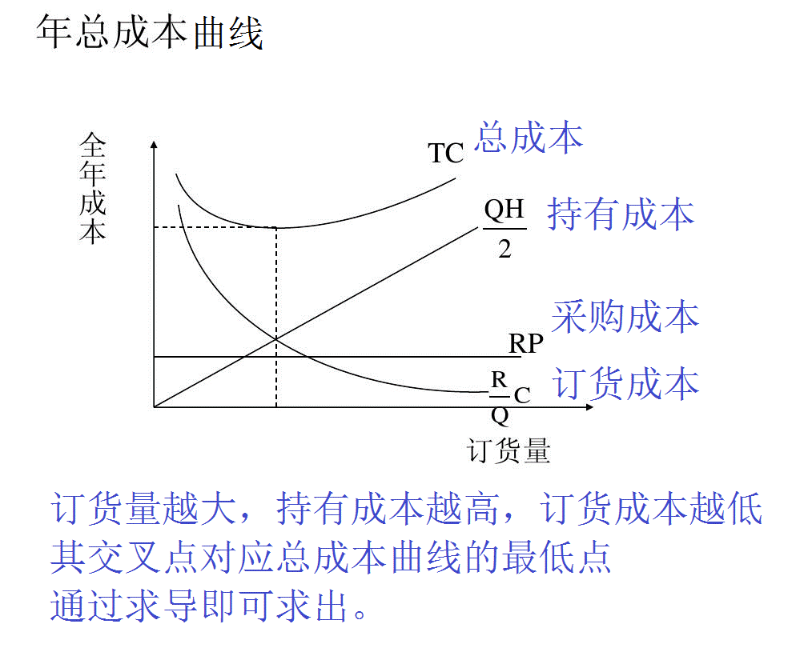
⑤ 通过求导求经济订货批量EOQ
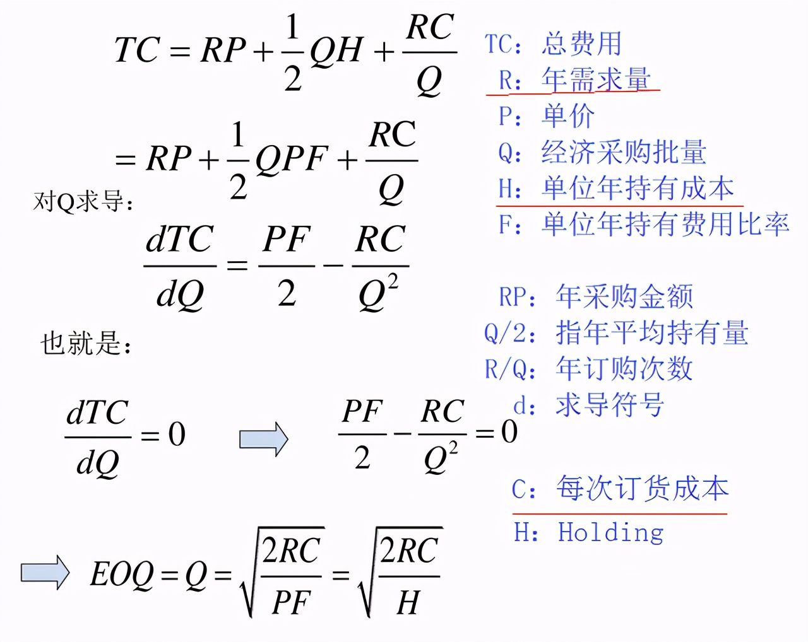
Q = SQRT(2*RC/H)
TC：总费用，Total Cost
R：年需求量，annual Requirement quantity
P：单价，Price
Q：经济采购批量，optimal order quantity
H：单位年持有成本，annual holding cost per unit
F：单位年持有费用比率
RP：年采购金额
Q/2：指年平均持有量
R/Q：年订购次数
d：求导符号
⑥ 具体案例
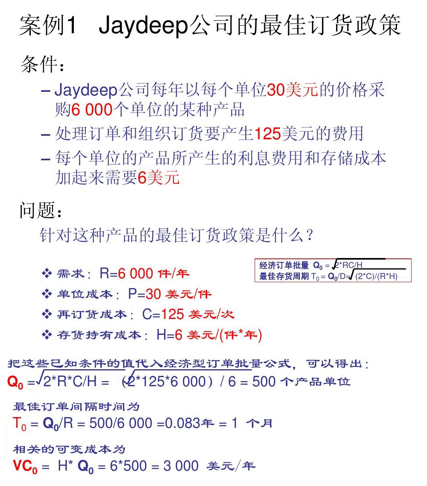
虽然EOQ公式比较简单明了，但是在实际应用时，还必须考虑其它一些因素。最常见的就是那些与各种费用调整有关的问题，这是为了利用特殊的购买形式和单位化（unitization）特征而必须做出的调整。如在EOQ公式中，没有考虑运输成本、数量折扣对订货批量的影响。
像经济订货量这样的经典的公式，主要是在过去一百多年内研究出来的，是典型的传统经济的产物，表现为节奏较慢，“从前的日色变得慢 / 车，马，邮件都慢 / 一生只够爱一个人”，人们思考的“单位时间”也就比较长，比如这里经济订货量的需求是按年来计算。在上世纪80年代以后，信息技术发展迅速，特别是这些年的电商经济，工业节奏就更快了。如果这些研究是在现在完成的话，围绕快消品的话，我想更可能会用周或月或季度来做计量单位了。
信息技术也显著改变了订货成本。以前下订单，发送订单，跟踪订单，收货验收，付款等都是手动，成本相当高；现在大部分任务，包括付款都可以自动化，成本显著下降——ERP自动产生订单，自动通过电子商务发给供应商，仓库收货验收时扫码，相关信息自动录入ERP，付款周期一到，自动付款，人工参与很少，单次订购成本自然就下降。这也意味着经济订货量EOQ会更小。所以一些企业不再使用经济订货量。
8 安全库存问题的应对措施
8.1 改善需求预测。
预测越准，意外需求发生的可能性就越小。还可以采取一些方法鼓励用户提前订货。
8.2 运用统计的手法
通过对前6个月甚至前1年产品需求量的分析，求出标准差后即得出上下浮动点后做出适量的库存。
8.3 缩短订货周期与生产周期
这一周期越短，在该期间内发生意外的可能性也越小。
8.4 减少供应的不稳定性
其中途径之一是让供应商知道你的生产计划，以便它们能够及早作出安排。
另一种途径是改善现场管理，减少废品或返修品的数量，从而减少由于这种原因造成的不能按时按量供应。还有一种途径是加强设备的预防维修，以减少由于设备故障而引发的供应中断或延迟;
一般地，厂商要处理两种流：物流和信息流。公司内部间的隔阂影响了信息的有效流通，信息的成批处理使得公司内“加速原理”生效，需求信息经常被扭曲或延迟，从而引起采购人员和生产计划制定者的典型反应——“前置时间或安全库存综合症”。该效应继续加强，直到增加过量，相应的成本同时随之上升。
过剩的生产能力不断蔓延至整条供应链，扭曲的需求数据开始引起“存货削减综合症”，厂商不得不选择永久降低产品的销售价格，侵蚀企业的盈利。前一种效应引起过量的存货，公司为了求出路又导致后一种结果，不进行流程改变，这两种效应将持续存在并互相推动。
在市场成长期，两种效应的结合所带来的后果常被增长的需求所掩盖，厂商可以生存甚至兴旺而不顾及震荡周期的存在——一段时间内，全力处理存货；另一段时间内却又不顾成本的加速生产。当市场进入平稳发展或下降期后，厂商开始一步步走向衰亡。在目前企业与企业存在隔阂甚至企业内部门之间也存在隔阂的情况下，信息传递滞后、反应缓慢、成批处理和不确定性是造成上述两种效应的深层原因，应对的根本也在于减少组织隔阂、加强信息疏导并能做到迅速反应。
许多厂商已经意识到供应链中所蕴含的巨大商机，并希望借此获得新一轮竞争中的先发优势，但新的运作理念要求新的运作模式与之相匹配。从供应链管理的思想出发，根据前面的分析结果有针对性地给出了七条重要解决措施。
措施1：实施柔性化组织管理
实施柔性管理是现代企业提高其竞争力的重要手段，处于供应链上的企业特别是核心企业必须提高其所在供应链的柔性以提高其竞争能力。厂商的柔性化组织通过快速调整生产达到高效运作以支持其企业和分销网络，避免企业陷入困境并加速产品上市。当厂商面向高效的供应链运作时，又可同时获得内部和外部的效率。内部效率也是供应链运作效率的关键驱动力之一，指的是灵活，而不是经济规模大小，对工厂和分销网络进行投资有助于实现灵活性；而在厂商的外部，供应商的效率则是供应链的绩效的关键。
措施2：建立联盟与合作
成功的战略联盟和战略合作伙伴关系也是供应链成功的基础。厂商应该关注整个供应链并减少供应商数量，通过实施供应商评估计划限制其数量，找出高质量运作的供应商，更密切和高效合作，保证无论何时何地需要哪一种高质量的产品，都能及时运到。随着向单一供应商趋势的发展。厂商需要向合作伙伴全面披露诸如财务绩效、利益分配策略和联合设计的工作计划等信息，并与其建立相对一致的文化。根据一致的预测开展工作，使用一致的信息技术系统。供应商则须能联接到消费者系统以获得详细的运输数据、生产计划以及任何其它所需要的信息。联盟伙伴以整体的力量参与市场竞争，需要确保联盟的管理机制。一般在联盟中确立市场影响力最大的企业为核心企业，使联盟整体随市场因素的变化而调整战略。成功的战略联盟或伙伴关系必须建立在完全信任、忠诚、双赢、共同目标和协作的基础上，而促成联盟谈判应建立在公平的前提下。
措施3：供应链间的协调尤为重要
每个厂商可能涉及几条供应链，而每一条很可能有不同的商业需求，在给不同的供应链分配使用一些共同的资源时必要的协调就显得十分重要。把既定大小的蛋糕公平的分给每个成员，远不如将蛋糕做大后，再进行分配更令大家满意。因此，成功的协调应建立在供应链价值增值的基础上，其中最关键的因素是预测需求的能力，协调的目标受需求影响，与公司大小无关。
措施4：提高信息沟通效率
供应链一个重要的功能就是传递信息，将最终用户的信息传回到生产商那里尤其重要，这可以优化消费者对产品的需求信息，提高生产运作。另外，提高成员内部以及它们之间的信息(包括新产品开发、产品改进、成本、需求、供给以及原材料等)沟通可以降低供应链上的不确定性和存货水平。在此基础上的理想买卖关系则可理顺整条供应链。
措施5：建立渠道竞争优势厂商
想在行业中获得并保持竞争优势不是一件容易的事情，竞争压力迫使企业必须时刻保持效率。许多厂商把供应链管理看作实现竞争优势的一种手段，希望将生产成本推给供应商，以剔除部分劳动成本。这种削减成本的策略提高了整个供应链竞争效率。同时，厂商变的越来越重视市场渠道，它们在观察整个渠道的活动是如何影响企业运作的。近年来，渠道的力量正移向零售商。分销渠道中零售商力量的增强是由一些大的零售商带动起来的。
措施6：外包非核心业务可以使企业获得成本效率
这种策略使得供应链中物流或生产的责任位于最有能力获得成功的成员那里，每个厂商都把有限的资源投入到自己最具核心竞争力的业务上，充分利用专业化和分工带来的好处。许多厂商现在将配送外包。并能通过第三方跟踪每一项业务。
措施7：加强存贷管理
过去，为了避免断货风险，大量存货普遍存在于商业流通中。随着不断的发展，许多厂商发现存货是成本的重要组成部分，它们更愿意将存货放在生产商处，使卖方管理存货(VMI)成为存货管理的一个趋势。在这种体系下。存货被推回到供货商那里，降低了链上其它成员的存货投资和风险。另外，对存货的快速反应导致产品生命周期变短，这种快速反应系统在消费者需要时，总可以提供适当数量的产品，从而提高了消费者服务，同时也提高了生产商的存货周转。
ref
《会设安全库存，再订货点的计算就很容易》https://www.cnblogs.com/purple5252/p/13571846.html
《库存管理》https://wenku.baidu.com/view/7a8a42d0ff0a79563c1ec5da50e2524de518d0e4.html
《安全库存》https://wiki.mbalib.com/wiki/%E5%AE%89%E5%85%A8%E5%BA%93%E5%AD%98
《解读订货点采购与库存控制》http://www.360doc.com/content/16/0123/22/18213013_530109216.shtml
《需求确定简单EOQ模型》https://wenku.baidu.com/view/ff0d186d03d8ce2f006623f6.html
《经济订货批量》https://wiki.mbalib.com/wiki/%E7%BB%8F%E6%B5%8E%E8%AE%A2%E8%B4%A7%E6%89%B9%E9%87%8F
－End－